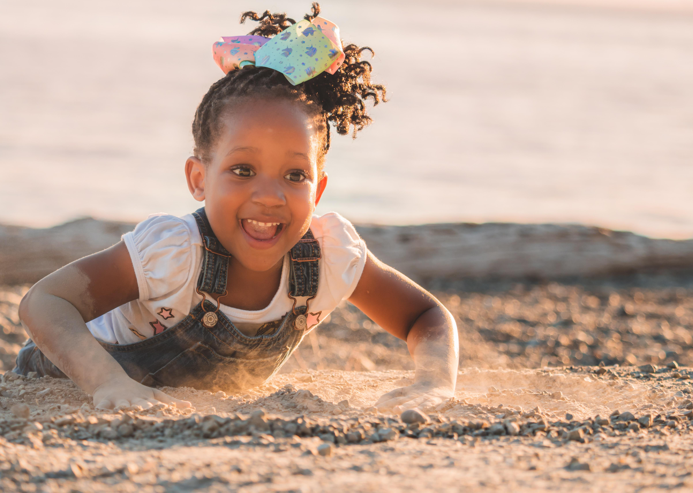

The beauty of African Child in Mother Land
Our photos bring smiles in different ages groups, especially in kids. We bring the story of beautifyl African children playing around nature. Not only that, but showing a positive image of Africa that the media will never show. Africa is natural, it is beautiful, its people are friendly, they are African with unique culture. Africa is nice.
-

This is just a place holder.
-

This is just a place holder.
African Child
are beautiful
-
Their smiles are cute
African child have beautiful hair, skin color, and smile. They are beautiful and fun to play with.
-
They are the future
The future lays on the way kids are taking care of, the way they are brought up, and the way the society portrait them. At Tijan's Photography, we use our cameras to tell these stories.
This is just a place holder, so you can see what the site would look like. You can replace all this text with your own text.